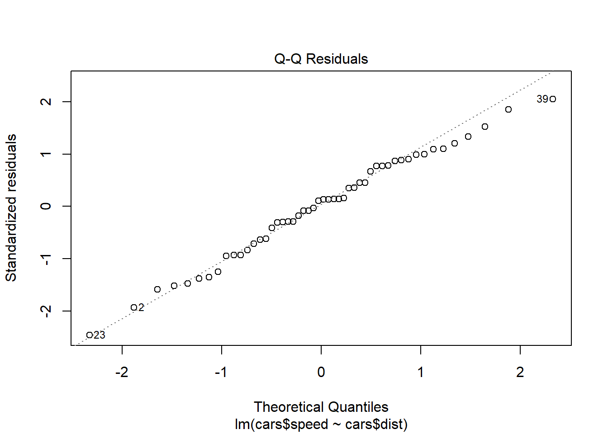
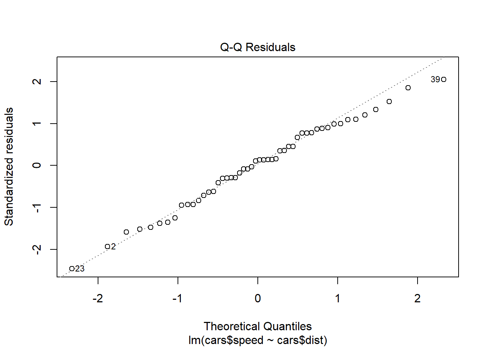
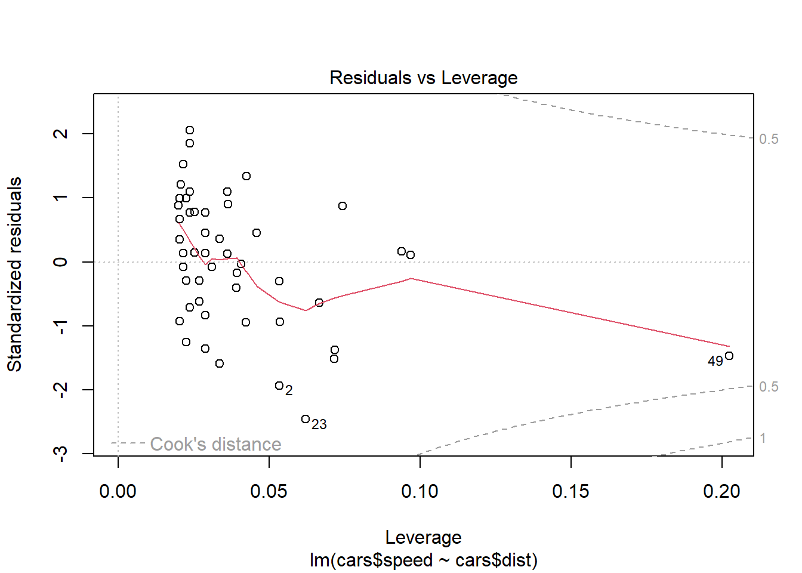
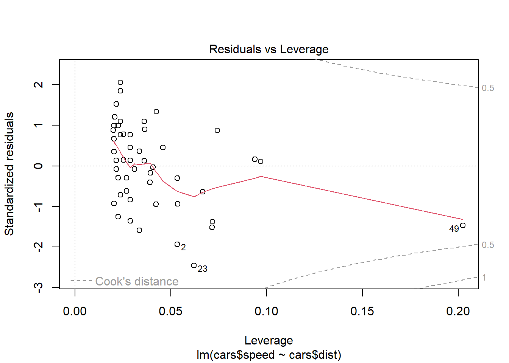
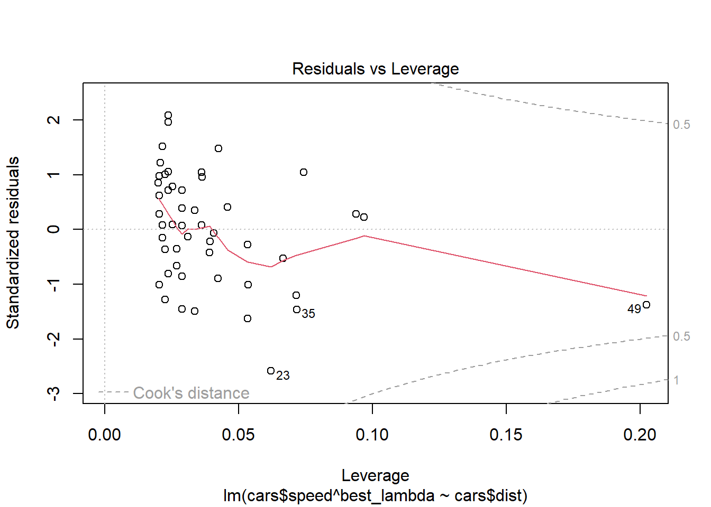
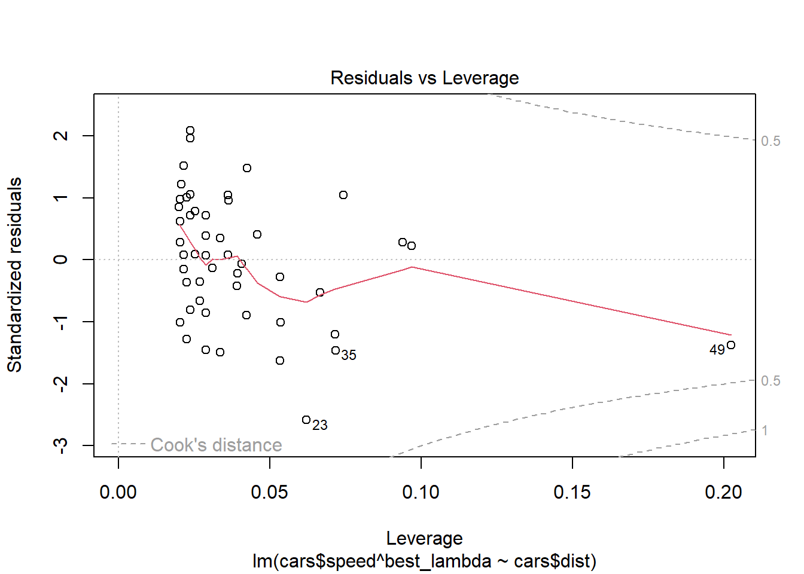

12 Variable Transformation
12.1 Continuous Variables
Transforming continuous variables can be useful for various reasons, including:
- Changing the scale of variables to make them more interpretable or comparable.
- Reducing skewness to approximate a normal distribution, which can improve statistical inference.
- Stabilizing variance in cases of heteroskedasticity.
- Enhancing interpretability in business applications (e.g., logarithmic transformations for financial data).
12.1.1 Standardization (Z-score Normalization)
A common transformation to center and scale data:
\[ x_i' = \frac{x_i - \bar{x}}{s} \]
where:
- \(x_i\) is the original value,
- \(\bar{x}\) is the sample mean,
- \(s\) is the sample standard deviation.
When to Use:
When variables have different units of measurement and need to be on a common scale.
When a few large numbers dominate the dataset.
12.1.2 Min-Max Scaling (Normalization)
Rescales data to a fixed range, typically \([0,1]\):
\[ x_i' = \frac{x_i - x_{\min}}{x_{\max} - x_{\min}} \]
When to Use:
When working with fixed-interval data (e.g., percentages, proportions).
When preserving relative relationships between values is important.
Caution: This method is sensitive to outliers, as extreme values determine the range.
12.1.3 Square Root and Cube Root Transformations
Useful for handling positive skewness and heteroskedasticity:
- Square root: Reduces moderate skewness and variance.
- Cube root: Works on more extreme skewness and allows negative values.
Common Use Cases:
Frequency count data (e.g., website visits, sales transactions).
Data with many small values or zeros (e.g., income distributions in microfinance).
12.1.4 Logarithmic Transformation
Logarithmic transformations are particularly useful for handling highly skewed data. They compress large values while expanding small values, which helps with heteroskedasticity and normality assumptions.
12.1.4.1 Common Log Transformations
| Formula | When to Use |
|---|---|
| \(x_i' = \log(x_i)\) | When all values are positive. |
| \(x_i' = \log(x_i + 1)\) | When data contains zeros. |
| \(x_i' = \log(x_i + c)\) | Choosing \(c\) depends on context. |
| \(x_i' = \frac{x_i}{|x_i|} \log |x_i|\) | When data contains negative values. |
| \(x_i'^\lambda = \log(x_i + \sqrt{x_i^2 + \lambda})\) | Generalized log transformation. |
Selecting the constant \(c\) is critical:
- If \(c\) is too large, it can obscure the true nature of the data.
- If \(c\) is too small, the transformation might not effectively reduce skewness.
From a statistical modeling perspective:
- For inference-based models, the choice of \(c\) can significantly impact the fit. See (Ekwaru and Veugelers 2018).
- In causal inference (e.g., DID, IV), improper log transformations (e.g., logging zero values) can introduce bias (J. Chen and Roth 2024).
12.1.4.2 When is Log Transformation Problematic?
- When zero values have a meaningful interpretation (e.g., income of unemployed individuals).
- When data are censored (e.g., income data truncated at reporting thresholds).
- When measurement error exists (e.g., rounding errors from survey responses).
If zeros are small but meaningful (e.g., revenue from startups), then using \(\log(x + c)\) may be acceptable.
library(tidyverse)
# Load dataset
cars = datasets::cars
# Original values
head(cars$speed)
#> [1] 4 4 7 7 8 9
# Log transformation (basic)
log(cars$speed) %>% head()
#> [1] 1.386294 1.386294 1.945910 1.945910 2.079442 2.197225
# Log transformation for zero-inflated data
log1p(cars$speed) %>% head()
#> [1] 1.609438 1.609438 2.079442 2.079442 2.197225 2.30258512.1.5 Exponential Transformation
The exponential transformation is useful when data exhibit negative skewness or when an underlying logarithmic trend is suspected, such as in survival analysis and decay models.
When to Use:
Negatively skewed distributions.
Processes that follow an exponential trend (e.g., population growth, depreciation of assets).
12.1.6 Power Transformation
Power transformations help adjust skewness, particularly for negatively skewed data.
When to Use:
When variables have a negatively skewed distribution.
When the relationship between variables is non-linear.
Common power transformations include:
Square transformation: \(x^2\) (moderate adjustment).
Cubic transformation: \(x^3\) (stronger adjustment).
Fourth-root transformation: \(x^{1/4}\) (more subtle than square root).
12.1.7 Inverse (Reciprocal) Transformation
The inverse transformation is useful for handling platykurtic (flat) distributions or positively skewed data.
Formula:
\[ x_i' = \frac{1}{x_i} \]
When to Use:
Reducing extreme values in positively skewed distributions.
Ratio data (e.g., speed = distance/time).
When the variable has a natural lower bound (e.g., time to completion).
# data(cars)
cars = datasets::cars
# Original distribution
head(cars$dist)
#> [1] 2 10 4 22 16 10
plot(cars$dist)
# Reciprocal transformation
plot(1 / cars$dist)
12.1.8 Hyperbolic Arcsine Transformation
The arcsinh (inverse hyperbolic sine) transformation is useful for handling proportion variables (0-1) and skewed distributions. It behaves similarly to the logarithmic transformation but has the advantage of handling zero and negative values.
Formula:
\[ \text{arcsinh}(Y) = \log(\sqrt{1 + Y^2} + Y) \]
When to Use:
Proportion variables (e.g., market share, probability estimates).
Data with extreme skewness where log transformation is problematic.
Variables containing zeros or negative values (unlike log, arcsinh handles zeros naturally).
Alternative to log transformation for handling zeros.


# Apply arcsinh transformation
as_dist <- bestNormalize::arcsinh_x(cars$dist)
as_dist
#> Standardized asinh(x) Transformation with 50 nonmissing obs.:
#> Relevant statistics:
#> - mean (before standardization) = 4.230843
#> - sd (before standardization) = 0.7710887
as_dist$x.t %>% hist()
| Paper | Interpretation |
|---|---|
| Azoulay, Fons-Rosen, and Zivin (2019) | Elasticity |
| Faber and Gaubert (2019) | Percentage |
| Hjort and Poulsen (2019) | Percentage |
| M. S. Johnson (2020) | Percentage |
| Beerli et al. (2021) | Percentage |
| Norris, Pecenco, and Weaver (2021) | Percentage |
| Berkouwer and Dean (2022) | Percentage |
| Cabral, Cui, and Dworsky (2022) | Elasticity |
| Carranza et al. (2022) | Percentage |
| Mirenda, Mocetti, and Rizzica (2022) | Percentage |
Consider a simple regression model: \[ Y = \beta X + \epsilon \] When both \(Y\) and \(X\) are transformed:
- The coefficient estimate \(\beta\) represents elasticity: A 1% increase in \(X\) leads to a \(\beta\)% change in \(Y\).
When only \(Y\) is transformed:
- The coefficient estimate represents a percentage change in \(Y\) for a one-unit change in \(X\).
This makes the arcsinh transformation particularly valuable for log-linear models where zero values exist.
12.1.9 Ordered Quantile Normalization (Rank-Based Transformation)
The Ordered Quantile Normalization (OQN) technique transforms data into a normal distribution using rank-based methods (Bartlett 1947).
Formula:
\[ x_i' = \Phi^{-1} \left( \frac{\text{rank}(x_i) - 1/2}{\text{length}(x)} \right) \]
where \(\Phi^{-1}\) is the inverse normal cumulative distribution function.
When to Use:
When data are heavily skewed or contain extreme values.
When normality is required for parametric tests.
ord_dist <- bestNormalize::orderNorm(cars$dist)
ord_dist
#> orderNorm Transformation with 50 nonmissing obs and ties
#> - 35 unique values
#> - Original quantiles:
#> 0% 25% 50% 75% 100%
#> 2 26 36 56 120
ord_dist$x.t %>% hist()12.1.10 Lambert W x F Transformation
The Lambert W transformation is a more advanced method that normalizes data by removing skewness and heavy tails.
When to Use:
When traditional transformations (e.g., log, Box-Cox) fail.
When dealing with heavy-tailed distributions.
# Apply Lambert W transformation
l_dist <- LambertW::Gaussianize(cars$dist)
l_dist %>% hist()
12.1.11 Inverse Hyperbolic Sine Transformation
The Inverse Hyperbolic Sine (IHS) transformation is similar to the log transformation but handles zero and negative values (N. L. Johnson 1949).
Formula:
\[ f(x,\theta) = \frac{\sinh^{-1} (\theta x)}{\theta} = \frac{\log(\theta x + (\theta^2 x^2 + 1)^{1/2})}{\theta} \]
When to Use:
When data contain zeros or negative values.
Alternative to log transformation in economic and financial modeling.
12.1.12 Box-Cox Transformation
The Box-Cox transformation is a power transformation designed to improve linearity and normality (Manly 1976; Bickel and Doksum 1981; Box and Cox 1981).
Formula:
\[ x_i'^\lambda = \begin{cases} \frac{x_i^\lambda-1}{\lambda} & \text{if } \lambda \neq 0\\ \log(x_i) & \text{if } \lambda = 0 \end{cases} \]
When to Use:
To fix non-linearity in the error terms of regression models.
When data are strictly positive
library(MASS)
# data(cars)
cars = datasets::cars
mod <- lm(cars$speed ~ cars$dist, data = cars)
# Check residuals
plot(mod) 
 

best_lambda <- bc$x[which.max(bc$y)]
# Apply transformation
mod_lambda = lm(cars$speed ^ best_lambda ~ cars$dist, data = cars)
plot(mod_lambda)

 

For the two-parameter Box-Cox transformation, we use:
\[ x_i' (\lambda_1, \lambda_2) = \begin{cases} \frac{(x_i + \lambda_2)^{\lambda_1}-1}{\lambda_1} & \text{if } \lambda_1 \neq 0 \\ \log(x_i + \lambda_2) & \text{if } \lambda_1 = 0 \end{cases} \]
# Two-parameter Box-Cox transformation
two_bc <- geoR::boxcoxfit(cars$speed)
two_bc
#> Fitted parameters:
#> lambda beta sigmasq
#> 1.028798 15.253008 31.935297
#>
#> Convergence code returned by optim: 0
plot(two_bc)

12.1.13 Yeo-Johnson Transformation
Similar to Box-Cox (when \(\lambda = 1\)), but allows for negative values.
Formula:
\[ x_i'^\lambda = \begin{cases} \frac{(x_i+1)^\lambda -1}{\lambda} & \text{if } \lambda \neq0, x_i \ge 0 \\ \log(x_i + 1) & \text{if } \lambda = 0, x_i \ge 0 \\ \frac{-[(-x_i+1)^{2-\lambda}-1]}{2 - \lambda} & \text{if } \lambda \neq 2, x_i <0 \\ -\log(-x_i + 1) & \text{if } \lambda = 2, x_i <0 \end{cases} \]
# data(cars)
cars = datasets::cars
yj_speed <- bestNormalize::yeojohnson(cars$speed)
yj_speed$x.t %>% hist()
12.1.14 RankGauss Transformation
A rank-based transformation that maps values to a normal distribution.
When to Use:
- To handle skewed data while preserving rank order.
12.1.15 Automatically Choosing the Best Transformation
The bestNormalize package selects the best transformation for a given dataset.
bestdist <- bestNormalize::bestNormalize(cars$dist)
bestdist$x.t %>% hist()
12.2 Categorical Variables
Transforming categorical variables into numerical representations is essential for machine learning models and statistical analysis. The key objectives include:
- Converting categorical data into a format suitable for numerical models.
- Improving model interpretability and performance.
- Handling high-cardinality categorical variables efficiently.
There are multiple ways to transform categorical variables, each with its advantages and use cases. The choice depends on factors like cardinality, ordinality, and model type.
12.2.1 One-Hot Encoding (Dummy Variables)
Creates binary indicator variables for each category.
Formula:
For a categorical variable with \(k\) unique values, create \(k\) binary columns:
\[ x_i' = \begin{cases} 1 & \text{if } x_i = \text{category} \\ 0 & \text{otherwise} \end{cases} \]
When to Use:
Low-cardinality categorical variables (e.g., Red, Blue, Green).
Tree-based models (e.g., Random Forest, XGBoost).
Linear regression models (dummy variables prevent information loss).
12.2.2 Label Encoding
Assigns integer values to categories.
Formula:
If a categorical variable has \(k\) unique values:
\[ \text{Category } \rightarrow \text{Integer} \]
Example:
| Category | Encoded Value |
|---|---|
| Red | 1 |
| Blue | 2 |
| Green | 3 |
When to Use:
Ordinal categorical variables (e.g., Low, Medium, High).
Neural networks (use embeddings instead of one-hot).
Memory-efficient encoding for high-cardinality features.
iris$Species_encoded <- as.numeric(factor(iris$Species))
head(iris$Species_encoded)
#> [1] 1 1 1 1 1 112.2.3 Feature Hashing (Hash Encoding)
Maps categories to a fixed number of hash bins, reducing memory usage.
When to Use:
High-cardinality categorical variables (e.g., user IDs, URLs).
Scenarios where an exact category match isnt needed.
Sparse models (e.g., text data in NLP).
library(text2vec)
library(Matrix)
data(iris)
# Convert the 'Species' factor to character tokens
tokens <- word_tokenizer(as.character(iris$Species))
# Create an iterator over tokens
it <- itoken(tokens, progressbar = FALSE)
# Define the hash_vectorizer with a specified hash size (8 in this case)
vectorizer <- hash_vectorizer(hash_size = 8)
# Create a Document-Term Matrix (DTM) using the hashed features
hashed_dtm <- create_dtm(it, vectorizer)
# Inspect the first few rows of the hashed feature matrix
head(hashed_dtm)
#> 6 x 8 sparse Matrix of class "dgCMatrix"
#>
#> 1 . . . . . . 1 .
#> 2 . . . . . . 1 .
#> 3 . . . . . . 1 .
#> 4 . . . . . . 1 .
#> 5 . . . . . . 1 .
#> 6 . . . . . . 1 .word_tokenizer: This function splits the character vector into tokens. Since
iris$Speciesis already a categorical variable with values like"setosa","versicolor", and"virginica", each value becomes a token.itoken: Creates an iterator over the tokens.
hash_vectorizer: Sets up a hashing vectorizer that transforms tokens into a sparse feature space of size
2^3 = 8(becausehash_size = 8means \(2^8\) bins; if you intend exactly 8 bins, you might adjust the parameter accordingly).create_dtm: Builds the document-term matrix (which in this case is analogous to a feature matrix for each observation).
12.2.4 Binary Encoding
Converts categories to binary representations and distributes them across multiple columns.
Example:
For four categories (A, B, C, D):
| Category | Binary Code | Encoded Columns |
|---|---|---|
| A | 00 | 0, 0 |
| B | 01 | 0, 1 |
| C | 10 | 1, 0 |
| D | 11 | 1, 1 |
When to Use:
High-cardinality categorical features (less memory than one-hot encoding).
Tree-based models (preserves some ordinal information).
library(mltools)
library(data.table)
# Convert the Species column to a data.table and perform one-hot encoding
binary_encoded <- one_hot(as.data.table(iris[, "Species"]))
head(binary_encoded)
#> V1_setosa V1_versicolor V1_virginica
#> <int> <int> <int>
#> 1: 1 0 0
#> 2: 1 0 0
#> 3: 1 0 0
#> 4: 1 0 0
#> 5: 1 0 0
#> 6: 1 0 012.2.5 Base-N Encoding (Generalized Binary Encoding)
Expands Binary Encoding to base \(N\) instead of binary.
When to Use:
- Similar to Binary Encoding, but allows for greater flexibility.
12.2.6 Frequency Encoding
Replaces each category with its frequency (proportion) in the dataset.
Formula: \[ x_i' = \frac{\text{count}(x_i)}{\text{total count}} \] When to Use:
High-cardinality categorical variables.
Feature engineering for boosting algorithms (e.g., LightGBM).
12.2.7 Target Encoding (Mean Encoding)
Encodes categories using the mean of the target variable.
Formula: \[ x_i' = E[Y | X = x_i] \] When to Use:
Predictive models with categorical features strongly correlated with the target.
High-cardinality categorical variables.
Risk: Can lead to data leakage (use cross-validation).
library(data.table)
iris_dt <- as.data.table(iris)
iris_dt[, Species_mean := mean(Sepal.Length), by = Species]
head(iris_dt$Species_mean)
#> [1] 5.006 5.006 5.006 5.006 5.006 5.00612.2.8 Ordinal Encoding
Maps categories to ordered integer values based on logical ranking.
Example:
| Category | Ordinal Encoding |
|---|---|
| Low | 1 |
| Medium | 2 |
| High | 3 |
When to Use:
- Ordinal variables with meaningful order (e.g., satisfaction ratings).
iris$Species_ordinal <-
as.numeric(factor(iris$Species,
levels = c("setosa", "versicolor", "virginica")))
head(iris$Species_ordinal)
#> [1] 1 1 1 1 1 112.2.9 Weight of Evidence Encoding
Concept:
WoE is a method to convert categorical data into numerical values that capture the strength of the relationship between a feature (or category) and a binary outcome (like default vs.non-default).-
The Formula: \[ \text{WoE} = \log \left( \frac{P(X_i | Y=1)}{P(X_i | Y=0)} \right) \]
\((X_i | Y=1)\): The probability (or proportion) of observing category \(X_i\) given the positive outcome (e.g., a good credit event).
\(P(X_i | Y=0)\): The probability of observing category \(X_i\) given the negative outcome (e.g., a bad credit event).
-
Logarithm: Taking the log of the ratio gives us a symmetric scale where:
A positive WoE indicates the category is more associated with the positive outcome.
A negative WoE indicates the category is more associated with the negative outcome.
When and Why to Use WoE Encoding?
Logistic Regression in Credit Scoring:
Logistic regression models predict probabilities in terms of log-odds. WoE encoding aligns well with this because it essentially expresses how the odds of the positive outcome change with different categories. This is why its popular in credit scoring models.Interpretability:
The WoE transformation makes it easier to understand and interpret the relationship between each category of a variable and the outcome. Each categorys WoE value tells you whether it increases or decreases the odds of a particular event (e.g., default).
Imagine you have a feature Employment Status with categories Employed and Unemployed:
-
Calculate Proportions:
\(P(\text{Employed} | Y=1) = 0.8\) (80% of good credit cases are employed)
\(P(\text{Employed} | Y=0) = 0.4\) (40% of bad credit cases are employed)
Compute WoE for Employed: \[ \text{WoE}_{\text{Employed}} = \log \left( \frac{0.8}{0.4} \right) = \log(2) \approx 0.693 \] A positive value indicates that being employed increases the odds of a good credit outcome.
-
Repeat for Unemployed:
Suppose:\(P(\text{Unemployed} | Y=1) = 0.2\)
\(P(\text{Unemployed} | Y=0) = 0.6\) \[ \text{WoE}_{\text{Unemployed}} = \log \left( \frac{0.2}{0.6} \right) = \log\left(\frac{1}{3}\right) \approx -1.099 \] A negative value indicates that being unemployed is associated with a higher likelihood of a bad credit outcome.
Why is WoE Valuable?
Linear Relationship:
When you plug these WoE values into a logistic regression, the model essentially adds these values linearly, which fits nicely with how logistic regression models the log-odds.Stability & Handling of Missing Values:
WoE can also help in smoothing out fluctuations in categorical data, especially when there are many levels or some levels with few observations.Regulatory Acceptance:
In industries like banking, WoE is widely accepted because of its clear interpretability, which is crucial for compliance and transparency in credit risk modeling.
# Load required packages
library(dplyr)
library(knitr)
# Create a sample dataset
# We assume 100 good credit cases and 100 bad credit cases
# Good credit: 80 "Employed" and 20 "Unemployed"
# Bad credit: 40 "Employed" and 60 "Unemployed"
data <- data.frame(
employment_status = c(rep("Employed", 80), rep("Unemployed", 20),
rep("Employed", 40), rep("Unemployed", 60)),
credit = c(rep(1, 100), rep(0, 100))
)
# Calculate counts for each category
woe_table <- data %>%
group_by(employment_status) %>%
summarise(
good = sum(credit == 1),
bad = sum(credit == 0)
) %>%
# Calculate the distribution for good and bad credit cases
mutate(
dist_good = good / sum(good),
dist_bad = bad / sum(bad),
WoE = log(dist_good / dist_bad)
)
# Print the WoE table
kable(woe_table)| employment_status | good | bad | dist_good | dist_bad | WoE |
|---|---|---|---|---|---|
| Employed | 80 | 40 | 0.8 | 0.4 | 0.6931472 |
| Unemployed | 20 | 60 | 0.2 | 0.6 | -1.0986123 |
# Merge the WoE values into the original data
data_woe <- data %>%
left_join(woe_table %>% dplyr::select(employment_status, WoE), by = "employment_status")
head(data_woe)
#> employment_status credit WoE
#> 1 Employed 1 0.6931472
#> 2 Employed 1 0.6931472
#> 3 Employed 1 0.6931472
#> 4 Employed 1 0.6931472
#> 5 Employed 1 0.6931472
#> 6 Employed 1 0.6931472
# Fit a logistic regression model using WoE as predictor
model <- glm(credit ~ WoE, data = data_woe, family = binomial)
# Summary of the model
summary(model)
#>
#> Call:
#> glm(formula = credit ~ WoE, family = binomial, data = data_woe)
#>
#> Coefficients:
#> Estimate Std. Error z value Pr(>|z|)
#> (Intercept) 1.023e-12 1.552e-01 0.000 1
#> WoE 1.000e+00 1.801e-01 5.552 2.83e-08 ***
#> ---
#> Signif. codes: 0 '***' 0.001 '**' 0.01 '*' 0.05 '.' 0.1 ' ' 1
#>
#> (Dispersion parameter for binomial family taken to be 1)
#>
#> Null deviance: 277.26 on 199 degrees of freedom
#> Residual deviance: 242.74 on 198 degrees of freedom
#> AIC: 246.74
#>
#> Number of Fisher Scoring iterations: 4When you fit a logistic regression using the WoE-encoded variable, the model is essentially: \[ \log\left(\frac{P(Y=1)}{P(Y=0)}\right) = \beta_0 + \beta_1 \cdot \text{WoE} \] Here, WoE represents the Weight of Evidence value for a given category.
Log Odds Change:
\(\beta_1\) indicates how much the log odds of a good credit outcome change for a one-unit increase in WoE. For example, if \(\beta_1 = 0.5\), then a one-unit increase in WoE is associated with an increase of 0.5 in the log odds of having a good credit outcome.Odds Ratio:
If you exponentiate \(\beta_1\), you get the odds ratio. For instance, if \(\beta_1 = 0.5\), then \(\exp(0.5) \approx 1.65\). This means that for each one-unit increase in WoE, the odds of having a good credit outcome are multiplied by about 1.65.
Why is This Meaningful?
Direct Link to the Data:
The WoE value itself is a transformation of the original categorical variable that reflects the ratio of the proportions of good to bad outcomes for that category. By using WoE, youre directly incorporating this information into the model.-
Interpretability:
The interpretation becomes intuitive:A positive WoE indicates that the category is more associated with a good outcome.
A negative WoE indicates that the category is more associated with a bad outcome.
Thus, if \(\beta_1\) is positive, it suggests that as the category moves to one with a higher WoE (i.e., more favorable for a good outcome), the likelihood of a good outcome increases.
12.2.10 Helmert Encoding
Compares each category against the mean of previous categories.
When to Use:
- ANOVA models and categorical regression.
12.2.11 Probability Ratio Encoding
Encodes categories using the probability ratio of the target variable.
12.2.12 Backward Difference Encoding
Compares each category against the mean of all remaining categories.
12.2.13 Leave-One-Out Encoding
Similar to target encoding, but excludes the current observation to avoid bias.
12.2.17 Choosing the Right Encoding Method
| Encoding Method | Best for Low Cardinality | Best for High Cardinality | Handles Ordinality | Suitable for Tree Models | Suitable for Linear Models |
|---|---|---|---|---|---|
| One-Hot Encoding | Yes | No | No | Yes | Yes |
| Label Encoding | Yes | Yes | Yes | No | Yes |
| Target Encoding | Yes | Yes | No | Yes | Yes |
| Frequency Encoding | Yes | Yes | No | Yes | Yes |
| Binary Encoding | Yes | Yes | No | Yes | Yes |